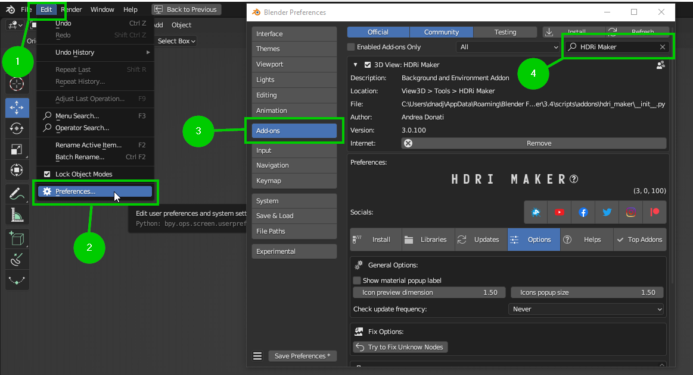
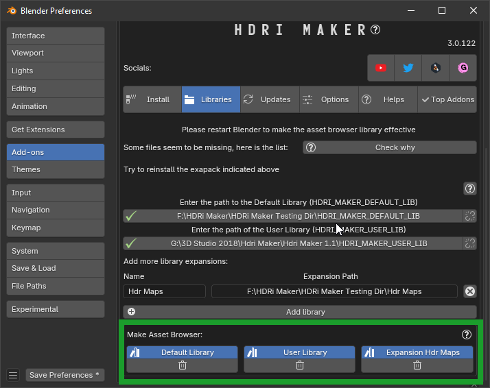
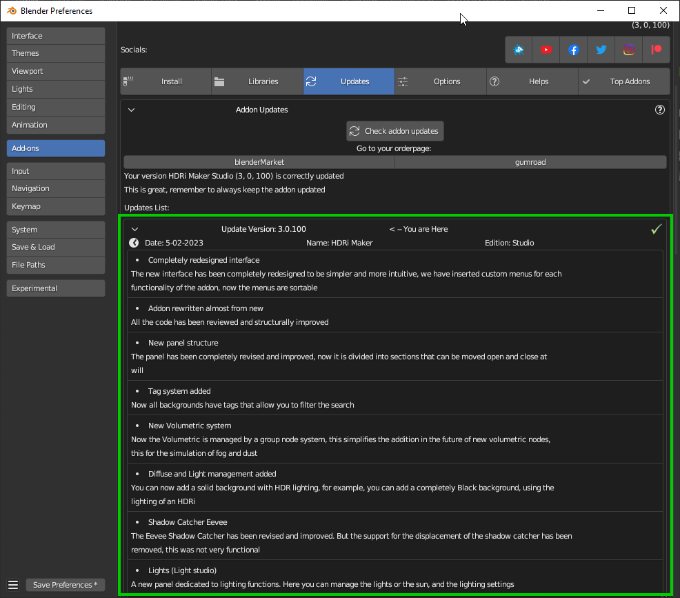
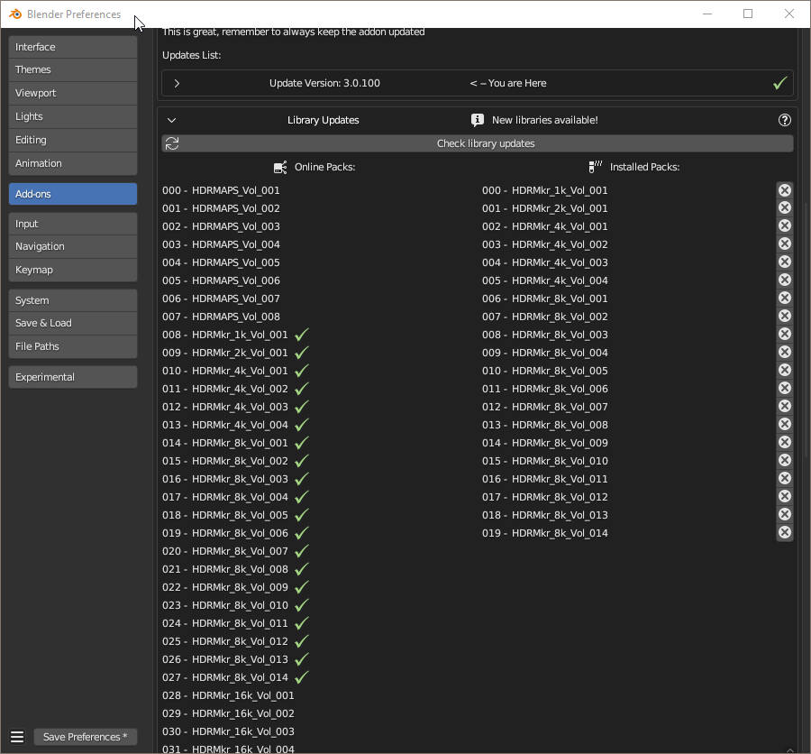

Preferences
{kind=link}
Open preferences

Edit -> Preferences -> Add-ons -> Search “HDRi Maker”
{kind=link}
Install Tab
This menu is necessary to install the default library of the addon, You can find the documentation “How To install” here: Install The library
{kind=link}
Libraries Tab
This menu is dedicated to the management of existing HDRi Maker libraries
{kind=link}
Default Library :
This is the default library of the addon, use this if you already have a library of HDRi Maker on your computer. It is not possible to use unknown libraries in this path, only those of HDRi Maker.
User Library :
This is where HDRi Maker will save your backgrounds, this is managed by HDRi Maker, no installation is required. Do not try to use unknown libraries with HDRi Maker, it will not work
Expansions :
This is where you can add additional libraries, these libraries must have been made exclusively for HDRi Maker (for the moment)
Note
Each library added here will be visible in Library Selector that you can see here: Libraries selector
Asset Browser

This section allows you to create the libraries in the Asset Browser of Blender. To do this, just select the library you want to connect and press the button with the name of the library you want to create. When it is created, that button will turn Blue. To delete the asset browser, just press the button below that appears when the library has been created. You can find more information about the Asset Browser here: Create Asset Browser
{kind=link}
Updates Tab
Here you can check for updates of the addon and the addon libraries. (It is recommended to be connected to the internet to have the correct information about updates)
{kind=link}
Addon updates
This section allows you to check if there are updates for the addon. If there are and to compare the installed version with the available one.
{kind=link}
Note
To update the addon, make sure to go to the store where you purchased HDRi Maker and download the latest version available. Usually it is named like this hdri_maker_v30100.zip (The numbers are indicative and may vary) Here you can find how to install it: Installation
Library updates
This section allows you to keep track of the installed libraries, and to check if there are updates for them. All packages with the green check mark are installed in the addon library. Remember that you must have the libraries connected to the addon to use this menu. So make sure you have connected the libraries you want to check to the addon.
{kind=link}
Note
To update the libraries, just download the missing .exapack packages and install them. Here is how: Install The library
Remove Volume
This button allows you to remove the volume and all its files from the library.
Warning
This action is irreversible, if you delete the volume, the backgrounds of the library that were contained in this volume, will be deleted!
{kind=link}
Options Tab
Here you can change some settings of the addon
{kind=link}
General Options
Show material Popup label
This option allows you to display the name of the material in the popup menu of the material preview.
Icon Preview Dimension
This option allows you to change the size of the material preview in the addon interface.
Icon Popup Size
This option allows you to change the size of the material preview in the popup menu.
Check Update Frequency
This option allows you to change the frequency of the update check. (It is recommended to leave it at “Daily”)
Fix Options
Try to fix unknow nodes
This option allows you to try to fix the nodes of the material if they are not recognized by the Blender. Questo può succedere se si salva il progetto su versioni successive di Blender in cui ci sono nuovi nodi, e si ritorna alla versioni precedenti, in alcuni casi i nodi non sono piu riconosciuti. Questo tenta di sostituire i nodi non riconosciuti.
Try to fix unknow nodes
This option allows you to try to fix the nodes of the material if they are not recognized by the Blender. This can happen if you save the project on later versions of Blender where there are new nodes, and return to the previous versions, in some cases the nodes are no longer recognized. This tries to replace the unrecognized nodes.
Experimental Options
Color Space
This option “Very experimental” changes the color space of the images (if there are) HDR used as background. By default the color space is “Linear”
Show Creator Utility
This option is what I (Andrew_D creator of this addon) used to facilitate the creation of new libraries and materials / world Once activated, you can see in Shader edito, a new panel. This section is really “Dangerous” to use, it could compromise The good functioning of HDRi Maker. If you don’t know what you’re doing, don’t touch this option.
Volumetric Detail
This option allows you to use presets created by me, to manage the quality of the volumes. The settings range from Very Low to Ultra. Where very low is the lowest quality and Ultra the highest quality. This option is also available in the section here: Detail
Shadow Detail
Note
This option will no longer be visible in Blender 4.2 as it is no longer needed. Into previous versions of Blender, Show Shadow Detail is available.
This option allows you to use presets created by me, to manage the quality of the shadows. The settings range from Very Low to Ultra. Where very low is the lowest quality and Ultra the highest quality. This option is also available in the section here: eevee_shadow_detail
Helps Tab
In this section you can find some useful links for the support of HDRi Maker

Top Addons Tab
Here you will find addons that I found very useful and that I decided to put in this section. This section is still under development.
Note
If you think you have an addon or some useful tool, and you would like to be in this section, contact me following the request form contained at the bottom of the “Top Addons” section
{kind=link}